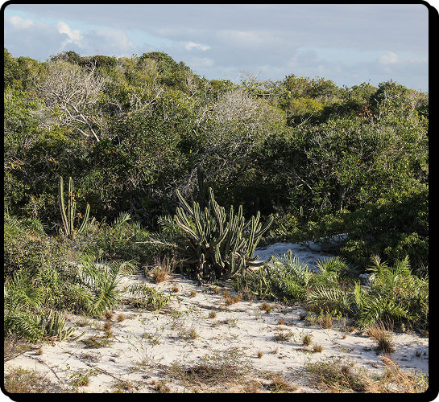

O Mico-leão-dourado (Leontopithecus rosalia) é uma espécie de primata endêmica do Brasil, considerado um símbolo da biodiversidade brasileira e um importante representante da Mata Atlântica. Ele pertence à família Callitrichidae, que inclui pequenos macacos conhecidos como titíes ou micos.
O Mico-leão-dourado é facilmente reconhecido por sua pelagem vibrante de cor dourada ou alaranjada,
que cobre
todo o corpo, dando-lhe uma aparência brilhante e marcante. Sua cabeça é pequena, com
olhos escuros e
expressivos, e possui uma face delicada. Sua cauda é longa, peluda e muitas vezes usada
para equilíbrio e
comunicação entre os membros do grupo. Os adultos geralmente medem entre 25 a 33
centímetros de comprimento,
além de uma cauda de aproximadamente o mesmo tamanho, e pesam entre
400 a 700 gramas.
Essa espécie vive principalmente na Mata Atlântica,
em áreas de floresta costeira e remanescentes de
vegetação densa no estado do Rio de Janeiro,
com algumas populações também em Minas
Gerais. Prefere
ambientes de floresta fechada,
onde consegue se mover com agilidade entre
as árvores, aproveitando a
vegetação para se
alimentar, dormir e se proteger de predadores.

O Mico-leão-dourado é um primata diurno e social, vivendo em grupos que variam de 4 a 8 indivíduos.
Esses
grupos são altamente cooperativos, com atividades coordenadas, como busca por alimento,
cuidado com os
filhotes e proteção contra ameaças. Sua dieta é bastante variada, incluindo frutas, flores,
néctar, insetos e
pequenos animais, o que garante sua sobrevivência em diferentes condições ambientais.
A reprodução ocorre geralmente uma vez por ano. A fêmea dá à luz a um ou dois filhotes após um período
de
gestação de cerca de 60 dias. Os filhotes nascem com uma pelagem mais clara e permanecem sob
os cuidados da
mãe por vários meses, aprendendo a procurar alimento, se comportar socialmente e a se
adaptar ao ambiente.
O mico-leão-dourado esteve à beira da extinção no século XX. Na década de 1970, estimava-se que havia menos de 200 indivíduos na natureza. Felizmente, ações coordenadas de conservação vêm tendo sucesso. O Projeto Mico-Leão-Dourado, fundado em 1992, é uma iniciativa reconhecida internacionalmente, que trabalha com pesquisa científica, reprodução em cativeiro, reintrodução na natureza, educação ambiental e reflorestamento.
Em 2016, o mico-leão-dourado foi estampado
na cédula de R$ 20, como forma de destacar
sua importância
simbólica.
O nascimento de
gêmeos é comum entre a espécie.
Apesar de viver em cativeiro em diversos países,
sua reintrodução na natureza só é possível em
áreas
preservadas e com muito planejamento.